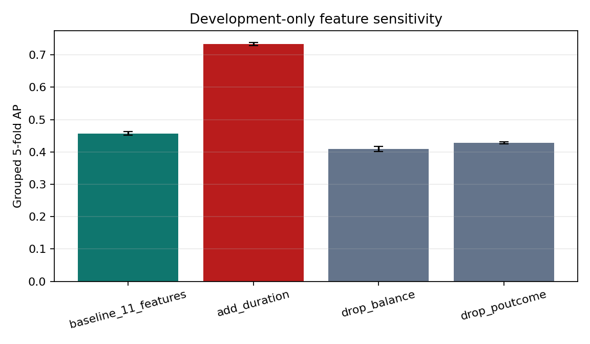
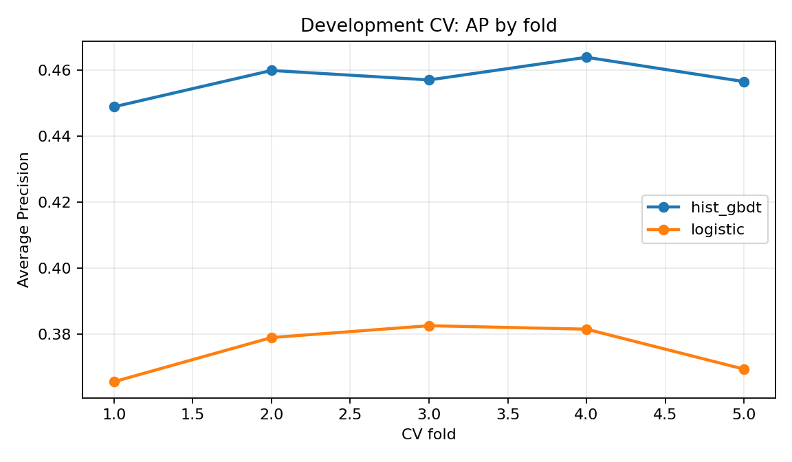
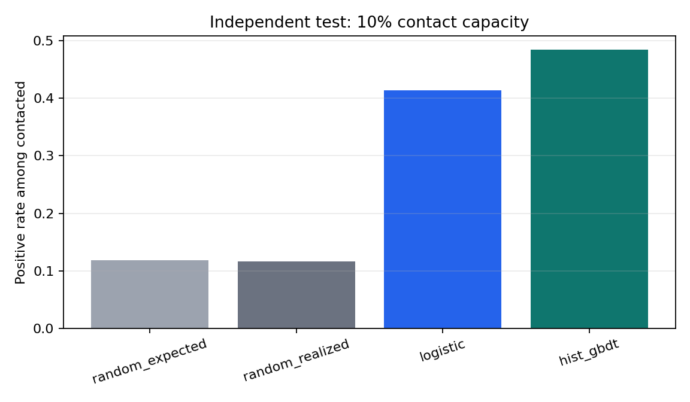
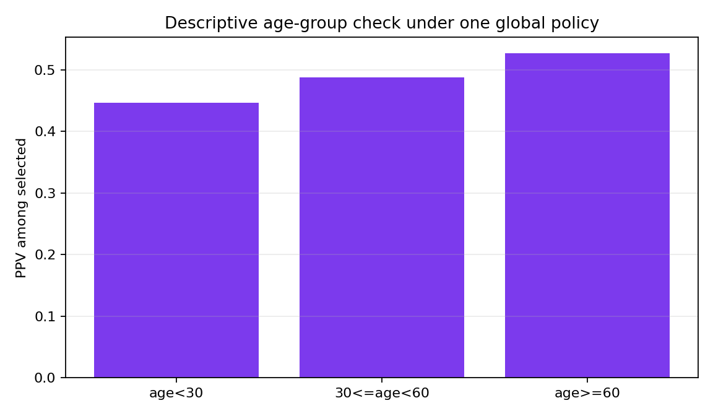

金融科技概论 · 期末项目
Bank Marketing
在联系前排序：有限名额联系谁？
600,000
有标签训练记录12.06%
总体正类率10%
主联系容量预测发生在本次联系前，按响应概率排序；不承诺购买，也不作因果解释。课程数据依据公开结构生成，并非银行生产数据。
主指标 Average Precision · 固定联系容量 · 防泄露审计
2. 防泄露设计
允许
11个联系前客户资料与历史字段
禁止
duration、当前活动/最后联系信息、目标与ID
相同画像同组；折内预处理
开发五折 → 锁定 → 固定测试
测试结果不返选；隐藏反馈不使用

仅开发集诊断：加入事后 duration 后 AP 0.457→0.734。时间定义决定它仍必须排除。
3. 同条件模型比较

| 模型 | 开发CV AP | 测试 AP | 测试 AUC | Top10 Lift |
|---|---|---|---|---|
| logistic | 0.3756 +/- 0.0076 | 0.3734 | 0.7347 | 3.49 |
| hist_gbdt | 0.4572 +/- 0.0055 | 0.4600 | 0.8070 | 4.09 |
相同分组切分、特征与指标；各模型一套固定参数。
GBDT AP 配对折差均值 +0.0816，五折均为正。
锁定模型：hist_gbdt；固定测试仅作评估，不返选方案。
4. 业务策略

联系 12,065 人，命中 5,843
正类率 48.43% · Lift 4.09
排序改善 ≠ 联系造成的因果增量。
开发OOF假设成本
| 情景 | FN:FP | 阈值 |
|---|---|---|
| fn_5_fp_1 | 5:1 | 0.16 |
| fn_2_fp_3 | 2:3 | 0.60 |
| fn_1_fp_1 | 1:1 | 0.50 |
权重非真实货币；测试集未用于阈值选择。
5. 错误与群体检查

| 年龄组 | 样本 | 正类率 | 选中PPV |
|---|---|---|---|
| age<30 | 11,652 | 19.96% | 44.70% |
| 30<=age<60 | 105,208 | 10.01% | 48.81% |
| age>=60 | 3,786 | 37.80% | 52.73% |
Top10%策略：未购买仍联系 6,222 人；未选中但购买 8,446 人。代表漏选样本为 age=51, balance=-11, pdays=-1, 历史结果 unknown。
年龄差异仅描述，不直接解释为歧视或因果结论。
6. 结论、稳定性与下一步
0.4654
换种子开发留出 AP0.0849
开发OOF Brier0.0084
十分位最大校准差- 模型适合做有限名额排序的课程原型，校准检查仅为粗粒度证据。
- 上线前补齐客户ID、特征时间戳、真实成本价值与随机实验。
- 先做受控试点，持续监控响应、选择率、分组差异和漂移。
- 代码、数据哈希、模型锁、诊断哈希和AI记录均可审计。